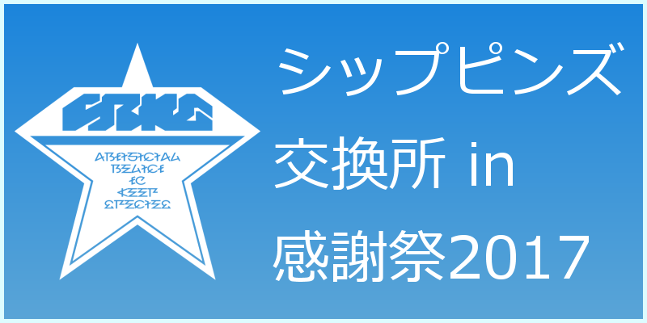

通常コンテンツ改修中
感謝祭までに間に合いませんでした；ｘ；
管理人：上月ちゃん（上月弦夜）
誕生日：１１月 ２日
年齢：永遠の２０才
所属シップ：Ship07 / Ship03
twitter：kamitsuki_genya
Copyright©2017 Genya Kamitsuki All Rights Reserved.
©SEGA PHANTASY STAR ONLINE 2


 管理人：上月ちゃん（上月弦夜）
管理人：上月ちゃん（上月弦夜）